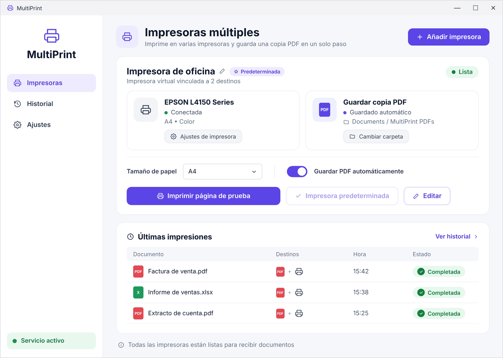

Cómo imprimir en dos impresoras a la vez en Windows
Windows envía cada trabajo a una sola impresora. Así puedes imprimir el mismo documento en dos o más impresoras a la vez, con una copia PDF automática, en un minuto.
Por qué Windows no lo hace por defecto
Al pulsar Imprimir, Windows entrega el trabajo a una única impresora. No existe un ajuste integrado para duplicarlo.
Se suele recomendar la «agrupación de impresoras» (printer pooling), pero envía cada trabajo a la primera impresora libre, no a todas.
Imprimir dos veces funciona, pero es lento y fácil de olvidar, sobre todo con facturas que necesitan copia en papel y PDF archivado.
Imprimir en varias impresoras con MultiPrint
Descarga MultiPrint
Descarga la app gratuita para Windows 10 u 11, descomprímela y ejecuta MultiPrint.exe. Acepta una vez el aviso de administrador.
Añade una impresora múltiple
Pulsa Añadir impresora y ponle un nombre, por ejemplo «Facturas».
Elige las impresoras
Marca dos o más impresoras. Añade «Microsoft Print to PDF» si también quieres una copia PDF.
Elige la carpeta PDF
Si eliges PDF, indica la carpeta y un prefijo opcional para el nombre. Los archivos se guardan allí automáticamente.
Imprime desde cualquier app
En Word, Excel, el navegador o tu programa de contabilidad, elige la nueva impresora.
Revisa el historial
Cada documento aparece en el historial con cada destino y su resultado.

Imprimir y guardar en PDF a la vez
Elige una impresora real y «Microsoft Print to PDF». Obtienes la copia impresa y un PDF como Factura_2026-11-02_15-45-00.pdf en la carpeta elegida, sin ventana de «Guardar como».
Preguntas frecuentes
¿Puede Windows imprimir en dos impresoras sin programas adicionales?
No. Windows envía el trabajo a una impresora; la agrupación de impresoras solo reparte trabajos, no imprime en todas.
¿Funciona con impresoras de red y USB?
Sí. Sirve cualquier impresora instalada en Windows, incluidas las de red, USB y de tickets.
¿Puedo elegir el tamaño de papel?
Cada impresora múltiple tiene un ajuste de tamaño (A4, A3, A5, Carta, Legal o automático). El resto de ajustes son los de cada impresora.
¿Es gratis?
Sí. MultiPrint es gratuito y de código abierto (licencia MIT).